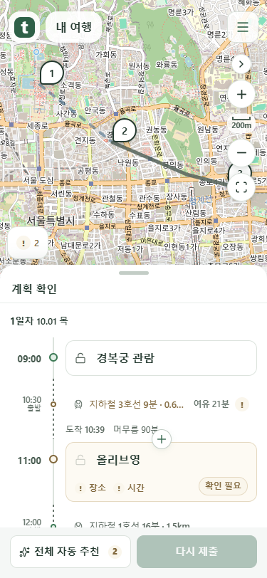
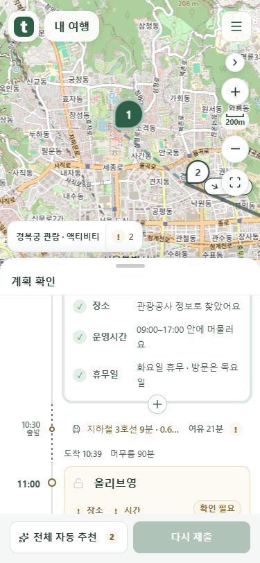
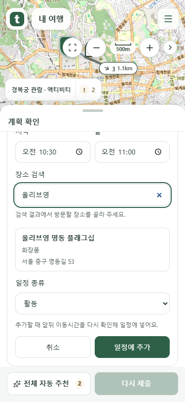
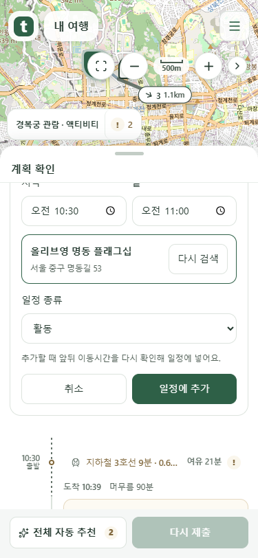
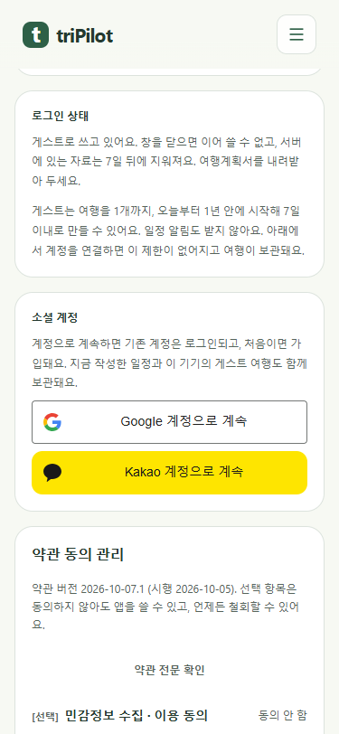
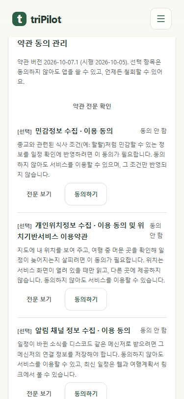
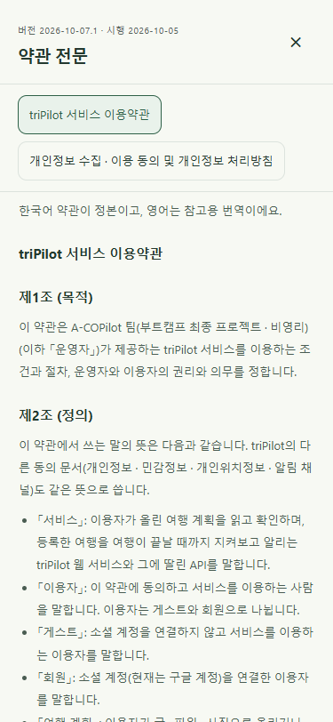

일정 사이의 +, 장소 검색, 통일한 계정 버튼과 약관 관리 화면입니다. 이미지를 누르면 원본 크기로 볼 수 있습니다.
실제 제품 코드를 Chrome에서 촬영했습니다. 일정·계정 응답은 mock 서버 시험 데이터이며 지도는 OpenStreetMap입니다. 공개 서비스 배포 전 화면입니다.
이동 → 일정 사이의 +스크롤한 목록의 가운데에 가장 가까운 경계에만 표시합니다.

일정 → 이동 사이의 +다른 경계가 가운데로 오면 +도 그 자리로 옮겨집니다.

그 자리에서 장소 검색추가할 경계 아래에 입력 화면이 열리고 실제 장소 검색 결과를 고릅니다.

고른 장소와 시간 확인장소 이름·좌표·출처를 함께 저장합니다. 날짜와 시간은 수정할 수 있습니다.

같은 형식의 계정 버튼Google과 Kakao의 공식 아이콘, 회사 이름, 같은 크기와 정렬입니다.

선택 동의 항목만 관리필수 항목의 요약과 철회 버튼은 빼고 전문 확인 버튼을 제공합니다.

필수 약관 전문 확인이용약관과 개인정보 전문을 전환해 읽고 닫습니다. 동의 변경은 없습니다.
